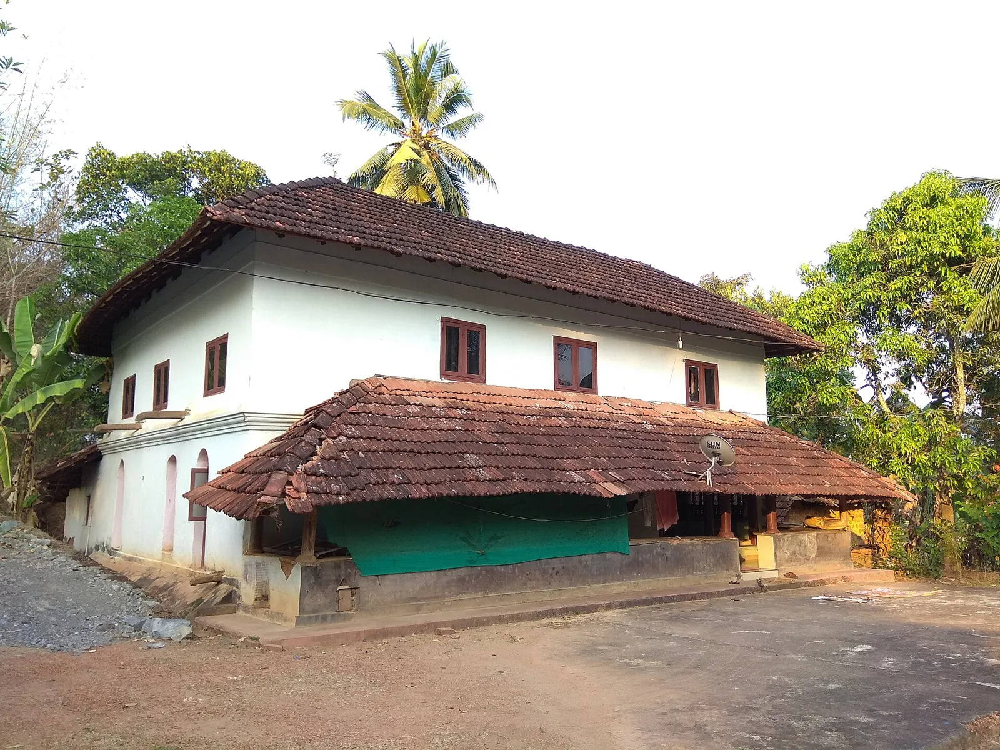
Vaidyan C.N. Namboothiri opens Dhanwanthari Vaidyasala after seven years of gurukula study.
Dhanwanthari Vaidyasala · Est. 1933
Chalappuram, Kozhikode
Inpatient care for pain, Panchakarma and detox in Kozhikode, from the house of Vaidyan C.N. Namboothiri.
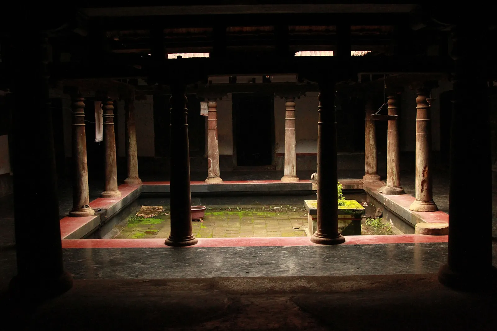
Chalappuram, Kozhikode
Inpatient rooms, daily therapies under a physician, and medicines from our own pharmacy.
Our approach
Since 1933, the house founded by Vaidyan C.N. Namboothiri has treated Kerala with classical Ayurveda and medicines from its own pharmacy. In Kozhikode, that care comes with a bed, daily therapies under a physician, and the time healing needs.
Treatments
Every treatment starts with a consultation. Your physician chooses the therapy, the oils and the number of days.
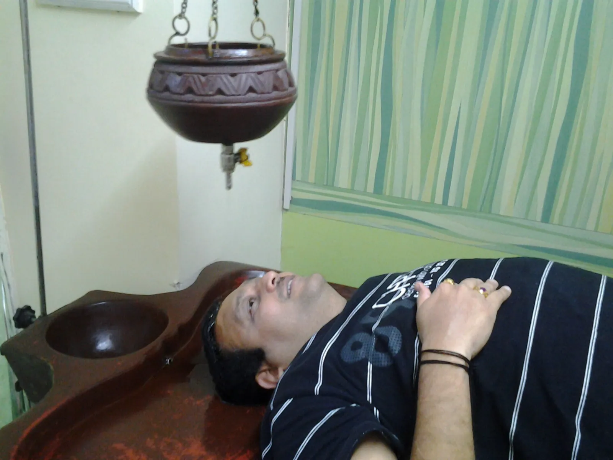
Shirodharaശിരോധാര A steady stream of warm medicated oil poured over the forehead. Stress · sleep · headaches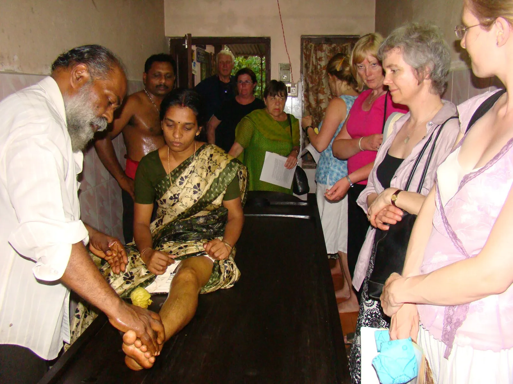
Elakizhiഇലക്കിഴി Bundles of medicinal leaves, heated in oil and pressed over sore joints. Joint pain · sprains · back pain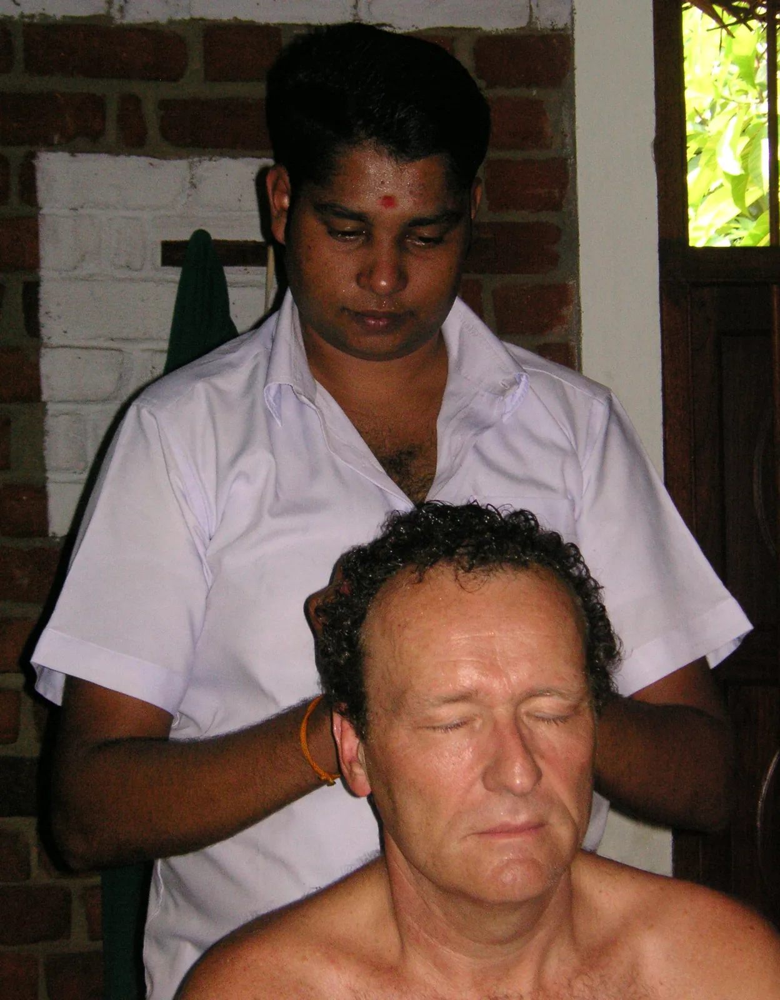
Abhyangaഅഭ്യംഗം Full-body massage with warm herbal oil chosen for your constitution. Stiffness · fatigue · circulation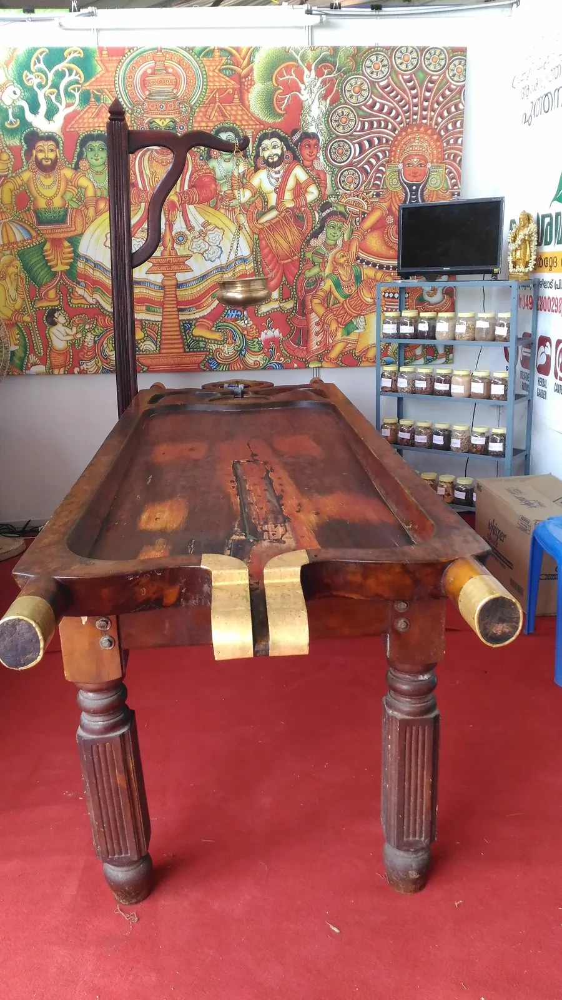
Pizhichilപിഴിച്ചിൽ Lukewarm oil squeezed over the body in rhythm while you are massaged. Arthritis · nerve weakness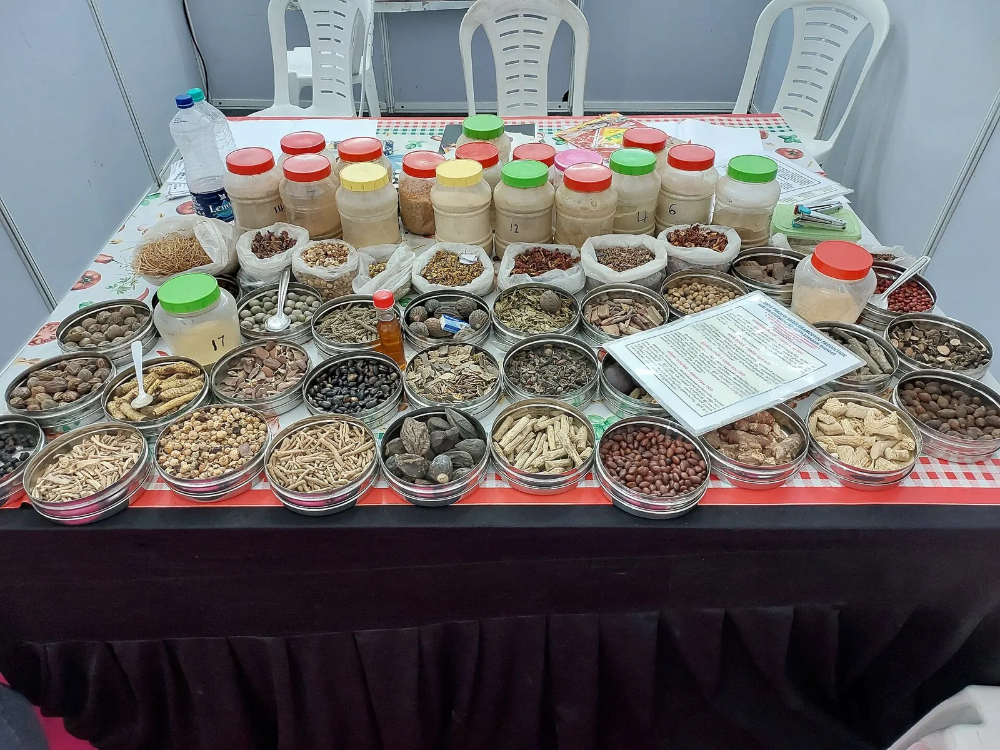
Navarakizhiഞവരക്കിഴി Navara rice cooked in milk and herbs, bundled and massaged into the muscles. Muscle wasting · rejuvenationOur story
Ninety-three years, told in six moments. Keep scrolling.

Vaidyan C.N. Namboothiri opens Dhanwanthari Vaidyasala after seven years of gurukula study.
Branches open in Madras, Bangalore, Coimbatore, Salem, Erode and Kanyakumari.
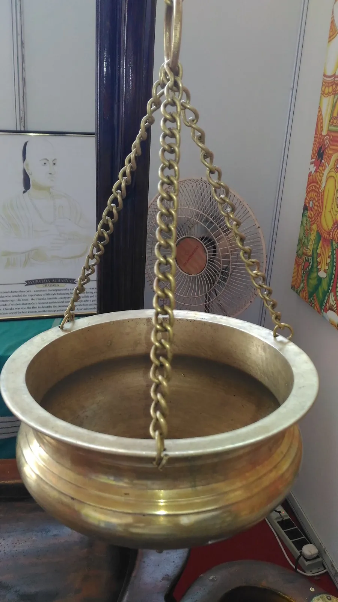
The founder travels to the United States and Europe to share Kerala's Ayurveda.
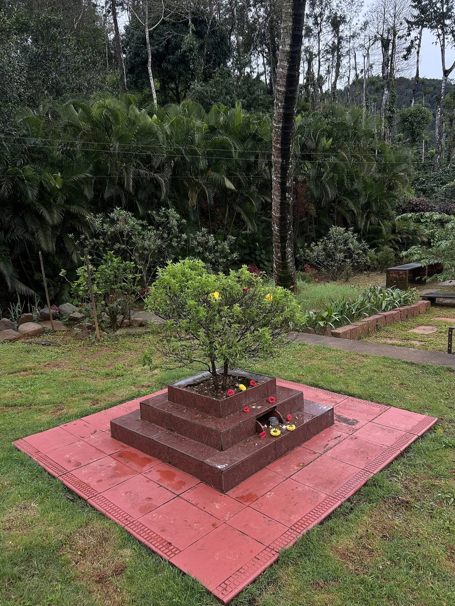
Our medicine factory is certified for Good Manufacturing Practice.
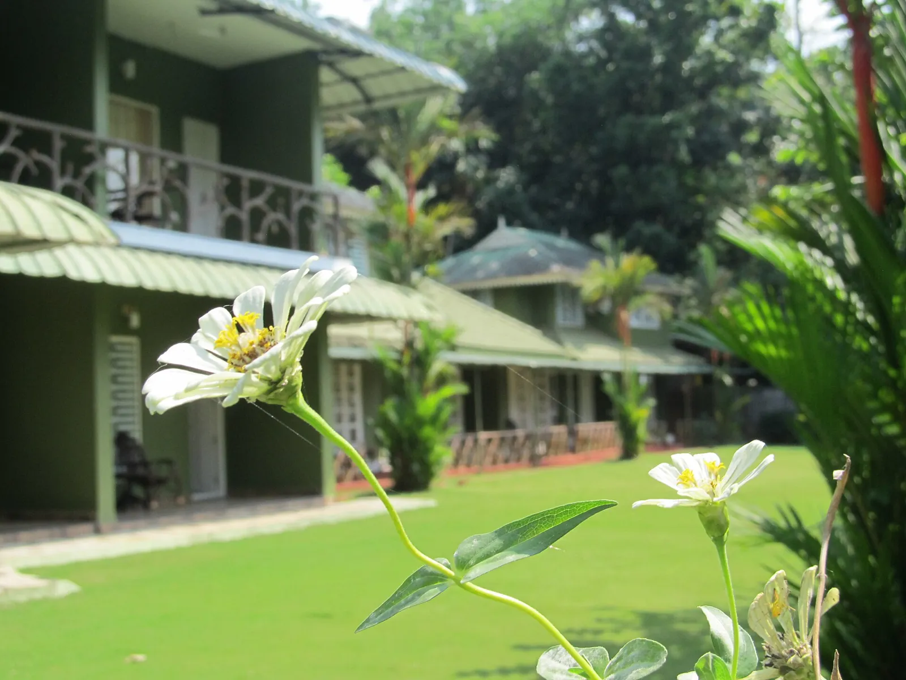
Inpatient hospitals in Thodupuzha and Kozhikode, clinics across Kerala and about 350 outlets.
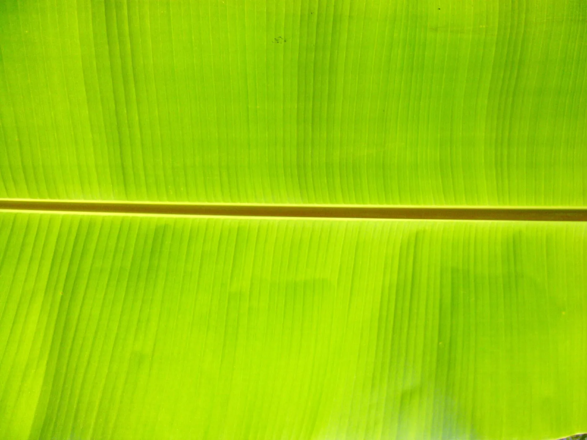
Our first centre outside India opens in Bur Dubai.
Our own medicines
The oils and medicines used in your treatment come from Dhanwanthari's own GMP-certified factory, with herbs from our own gardens.
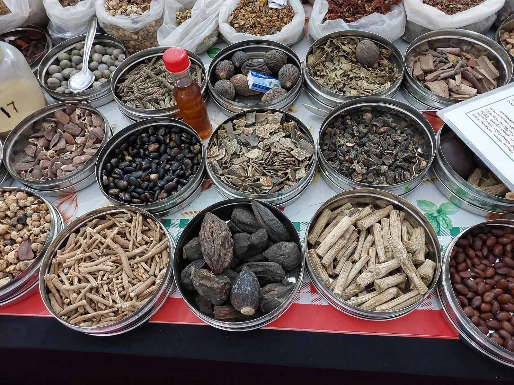
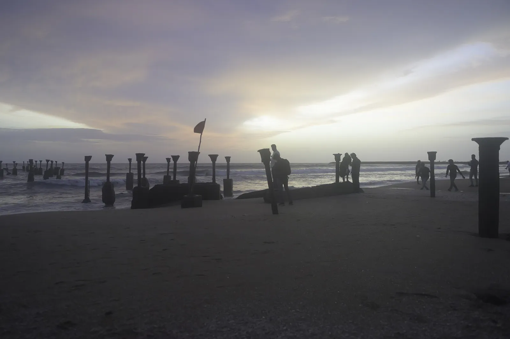